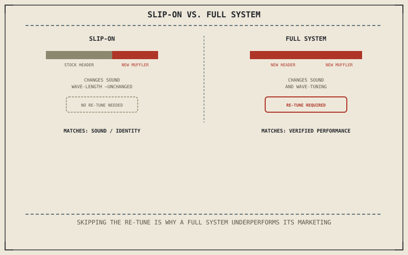

Chapter 2.14 already explained what an exhaust actually does: not a passive drain for spent gas, but a timed instrument tuning a reflected pressure wave to arrive at the exhaust valve at exactly the right instant. This chapter doesn't re-derive that physics — it applies it directly to the purchase decision, since an exhaust is the single most commonly modified component on any motorcycle, and Chapter 13.1's three motives collide here more than almost anywhere else.
Chapter 13.1 closed by naming the exhaust as this part's first case study in evaluating a specific modification against the motive actually driving it. This chapter is that case study.
Slip-On Versus Full System: Two Different Purchases
A slip-on exhaust replaces only the muffler at the end of the system, leaving the stock header and mid-pipe — and with it, Chapter 2.14's tuned wave-length — largely untouched. It changes sound significantly and weight modestly, with comparatively little effect on the reflected-wave timing that actually shapes power delivery. A full system replaces the header as well, which is exactly the component Chapter 2.14 identified as controlling which RPM the helpful negative wave arrives at — meaningfully changing the power curve, for better or worse, depending on how well the new header's length and diameter actually match the rest of the engine.
The Re-Tune Requirement
Chapter 2.14 already warned that changing exhaust geometry disrupts the oxygen-sensor feedback Chapter 2.13 described the ECU relying on to hold the air-fuel ratio correct. A full system, and sometimes even a significant slip-on change, needs the fuel map re-flashed afterward to restore that calibration — without it, the engine is running on tuning data calculated for a different exhaust than the one actually installed. This is the single most common reason an exhaust swap underperforms its marketed gain: not a flaw in the pipe itself, but a re-tune step skipped entirely.
A slip-on changes sound with comparatively little effect on the power curve; a full system meaningfully changes the power curve but needs a matching re-tune to actually deliver it — and buying the louder, more expensive option without the tune satisfies neither the performance motive nor the budget behind it.

A diagram contrasting a slip-on exhaust, changing only the muffler with minimal effect on the power curve, against a full system, changing the header's tuned wave-length and requiring a matching ECU re-tune to realize any real performance gain.
Matching the Purchase to the Actual Motive
Chapter 13.1 separated performance, comfort, and identity as genuinely different motives, and an exhaust purchase is where naming the real one honestly matters most. If the actual motive is sound — Chapter 13.1's identity category — a slip-on is the proportionate purchase: cheaper, simpler, and carrying little of the re-tune burden a full system introduces. If the motive is genuinely performance, only a full system paired with an actual dyno-verified re-tune engages the wave-tuning physics Chapter 2.14 described closely enough to deliver a real, measured gain rather than a marketed one.
A Common Misconception, Cleared Up Early
It's a common assumption that a full system's marketed dyno chart describes what the pipe alone will do once bolted on. Nearly every published gain of that kind comes from the exhaust and a matching re-tune together, not the pipe in isolation — Chapter 2.14 already showed a mismatched exhaust can cost low-end torque rather than gain it, and skipping the re-tune step is exactly how a rider ends up with that outcome instead of the one advertised.
Where This Leads
Chapter 13.3 turns to suspension upgrades next, where the same question of matching a modification to the rider replaces matching one to the engine.
Key Concepts to Remember
- A slip-on changes sound with little effect on the tuned wave-length; a full system changes the header and meaningfully affects the power curve.
- A full system needs a matching ECU re-tune to restore correct fueling, and skipping it is the most common reason an exhaust swap underperforms.
- A slip-on suits a sound-driven purchase; only a full system with a verified re-tune suits a genuinely performance-driven one.
Cross-References
| ← Ch. 2.14 | Established exhaust wave tuning and header geometry's role in the power curve; this chapter applies that physics directly to a slip-on versus full-system purchase. |
| ← Ch. 2.13 | Established the ECU's oxygen-sensor feedback loop; this chapter treats a skipped re-tune after an exhaust swap as leaving that calibration mismatched. |
| ← Ch. 13.1 | Established performance, comfort, and identity as distinct modification motives; this chapter matches a slip-on or full-system purchase to whichever motive actually applies. |
| → Ch. 13.3 | Covers suspension upgrades and matching components to the rider. |